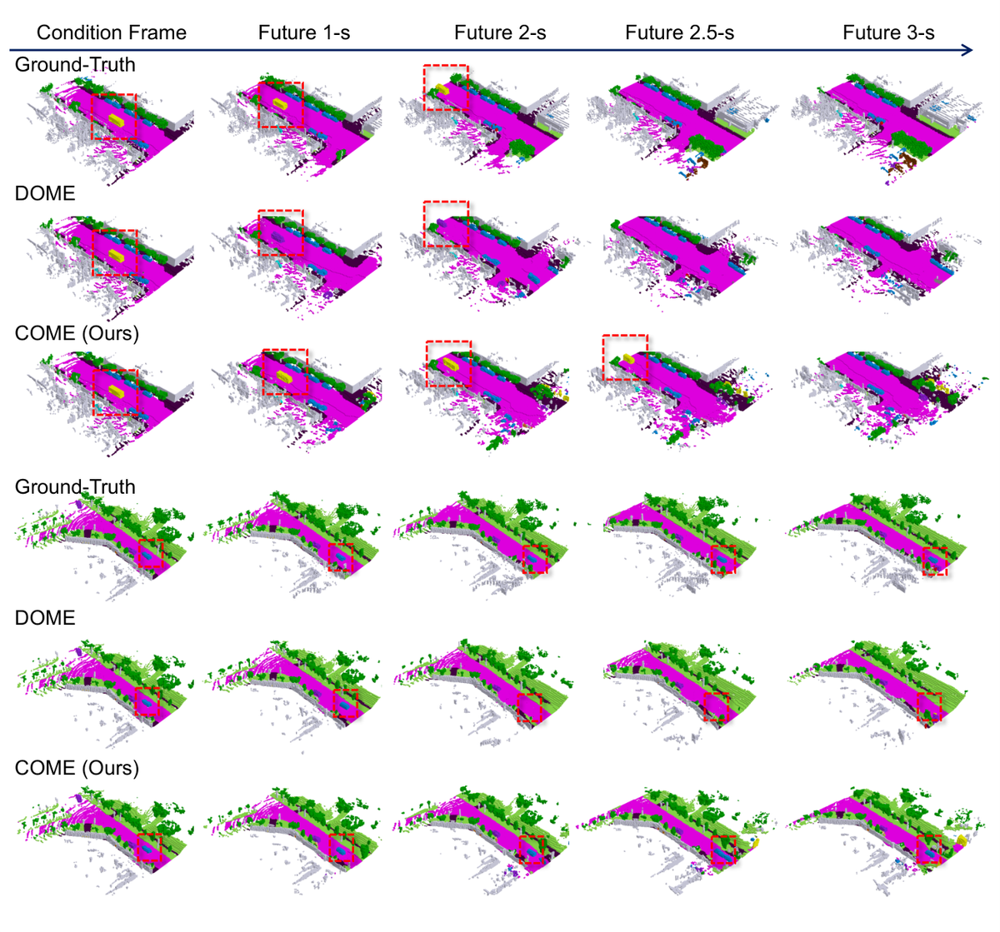

COME：向占用世界模型添加以场景为中心的预测控制
简单摘要
世界模型旨在理解环境当前状态并根据执行动作预测后续状态。世界模型生成的未来场景可采取2D视频、3D激光雷达点云或3D占用网格等多种表示形式。未来场景的外观变化主要受两个因素支配：自我车辆运动（视角偏移、遮挡等）和场景自身演化（智能体交互、背景更新等）。关键洞察在于：在许多真实场景中，背景环境相对稳定，自我车辆运动及其带来的视角变化才是世界模型表示中动态变化的主要来源。然而，当前SOTA世界模型依赖神经网络隐式学习这些因素的交织效应，导致空间一致性不佳。以DOME为例，使用真值轨迹进行3秒占用预测的平均mIoU仅27.10，而将预测转换到以场景为中心的坐标系后，普通U-Net即可达到39.12 mIoU，提升44%。该论文提出了一个三阶段框架，利用场景中心坐标将自我运动与场景动态分离。
核心创新
(1) 提出场景中心坐标系来显式解耦自我车辆运动与场景动态演化；(2) 三阶段框架设计：姿态条件扩散生成阶段、固定视角预测分支（消除自我运动效应）、全局去噪扩散阶段；(3) 模型迁移设计（MTD）：将固定视角预测模型前半部分作为可训练副本，通过跳跃连接将场景中心条件特征注入生成模型后半部分；(4) 无需显式场景流估计即可实现非交互式占用预测，显著降低建模复杂度。
技术细节
为了为以后的特征调节预留接口，我们在每个早期层和晚期层对之间引入了跳跃连接，类似于 UNet 和 HunyuanDiT 中的架构设计。为了解决这个问题，我们提出了一个以场景为中心的预测模块，它可以产生更连贯的场景演化，并为世界模型生成场景条件输入。(3) 将来自预测模块的场景条件转换为控制特征，随后将其注入到世界模型中，以生成可控且几何相干的占用率。作者这样设计，是为了把这一节的输入、约束和输出关系讲清楚。
3 方法论
围绕 3 方法论，本节介绍我们的框架，它将以场景为中心的预测控制集成到占用世界模型中。我们详细介绍了（如图所示）的三个主要组成部分。最后，描述了培训目标和总体培训流程。作者这样设计，是为了把这一节的输入、约束和输出关系讲清楚。
3.1 占用世界模型
我们将未来的轨迹（无论是真实轨迹还是规划模块预测的轨迹）视为生成模型的可用输入，主要原因有两个。（2）它能够实现轨迹条件生成，这对于世界模型产生多样化且可控的输出至关重要。为了为以后的特征调节预留接口，我们在每个早期层和晚期层对之间引入了跳跃连接，类似于 UNet 和 HunyuanDiT 中的架构设计。作者这样设计，是为了把这一节的输入、约束和输出关系讲清楚。
最后，输出被解码为以各种未来时间步骤和自我姿势为条件的占用预测。这一步的作用，是把当前结果继续传给后面的模块或训练目标。
3.2 以场景为中心的预测模块
我们描述的基础世界模型将未来轨迹视为一个条件，但对场景演化的内在本质的理解有限。为了解决这个问题，我们提出了一个以场景为中心的预测模块，它可以产生更连贯的场景演化，并为世界模型生成场景条件输入。最后，我们将这些预测转换为各自的未来时间步长，并通过 Occ-VAE 编码器对它们进行编码，产生带有 \ 的场景条件。
3.3
围绕 3.3，将场景条件编码为隐式控制特征，由受 HunyuanDiT 启发的块组成。出现这种限制的原因是预测模块由于结构简单，缺乏足够的能力来想象未来的状态。对于每个未来时间戳，我们首先追踪控制特征的根源，即由以场景为中心的预测模块预测的。作者这样设计，是为了把这一节的输入、约束和输出关系讲清楚。
$$ \mathbf{M}_i(h, w) = \mathbb{I} (\frac{1}{D\cdot \delta_h \cdot \delta_w}\sum_{d=1}^{D}\sum_{u=h\cdot \delta_h}^{(h+1)\cdot \delta_h} \sum_{v=w\cdot \delta_w}^{(w+1)\cdot \delta_w} \mathbf{m_i}(d, u, v) < \varepsilon ), $$
放在“方法论”这一部分看。这条式子描述了多个分量的聚合或逐步合成过程。它通常表示模型如何把局部贡献、概率权重或多项损失累积成最终结果。
3.4 培训渠道
(2) 在第 2 阶段，我们使用简单的交叉熵损失来训练基于 UNet 的预测模块。(3) 在第 3 阶段，我们冻结所有其他模块并专门训练 的参数。正如我们的消融研究所证明的那样，我们的多阶段训练策略不仅优化了训练效率，而且确保了可控的生成。作者这样设计，是为了把这一节的输入、约束和输出关系讲清楚。
实验结论
我们详细阐述了我们的实验设置、所提出框架的定量和定性结果、以及广泛的消融研究。演示了平衡定量和定性结果的掩蔽策略的最佳实践是在控制特征上设置不可见掩蔽。通过额外的 BEV 布局输入，进一步增强了隐形场景的生成并实现了最佳的整体性能。
4.1 实验装置
数据集和指标 所有实验均在广泛使用的基准上进行，该基准基于大规模 nuScenes 数据集提供 18 个类别的 3D 占用标签。注释覆盖的空间范围为 [-40m, -40m, -3.2m, 40m, 40m, 3.2m]，体素分辨率为 [0.4m, 0.4m, 0.4m]，从而每帧产生一个体素网格。我们采用几何交并（IoU）和语义平均交并（mIoU）作为评估指标。
4.2 定量评价
在之前的工作中，OccVAR 之前取得了最好的性能，平均 mIoU 为 11.79，平均 IoU 为 24.35。相比之下，我们实现了 19.11 mIoU 和 37.63 IoU，分别显着超过之前的最佳结果 62.1% 和 54.5%。此处，最佳先验 mIoU (22.71) 是由 DFIT-OccWorld 实现的，而最高 IoU (32.52) 是由 Occ-LLM 获得的。
| Method | Input | Ego traj. | mIoU (%) | IoU (%) | ||||||
|---|---|---|---|---|---|---|---|---|---|---|
| 1s | 2s | 3s | Avg. | 1s | 2s | 3s | Avg. | |||
| OccWorld-D | Camera | Pred. | 11.55 | 8.10 | 6.22 | 8.62 | 18.90 | 16.26 | 14.43 | 16.53 |
| OccWorld-T | Camera | Pred. | 4.68 | 3.36 | 2.63 | 3.56 | 9.32 | 8.23 | 7.47 | 8.34 |
| OccWorld-S | Camera | Pred. | 0.28 | 0.26 | 0.24 | 0.26 | 5.05 | 5.01 | 4.95 | 5.00 |
| OccWorld-F | Camera | Pred. | 8.03 | 6.91 | 3.54 | 6.16 | 23.62 | 18.13 | 15.22 | 18.99 |
| OccLLaMA | Camera | Pred. | 10.34 | 8.66 | 6.98 | 8.66 | 25.81 | 23.19 | 19.97 | 22.99 |
| OccVAR | Camera | Pred. | 17.17 | 10.38 | 7.82 | 11.79 | 27.60 | 25.14 | 20.33 | 24.35 |
| DFIT-OccWorld | Camera | Pred. | 13.38 | 10.16 | 7.96 | 10.50 | 19.18 | 16.85 | 15.02 | 17.02 |
| Occ-LLM-S | Camera | Pred. | 11.28 | 10.21 | 9.13 | 10.21 | 27.11 | 24.07 | 20.19 | 23.79 |
4.3 定性结果
展示了将真实占用率与 DOME 和我们的方法的预测进行比较的可视化效果。我们观察到 DOME 存在对象类别不一致（顶部示例）和对象突然消失（底部示例）的问题。相比之下，产生的结果具有改进的空间一致性，突出了场景条件注入的功效。

4.4 消融研究
相比之下，以场景为中心的预测在观测区域实现了高精度，但缺乏生成灵活性，限制了其在不同轨迹下新颖视图合成的想象力适用性。与预测模块相比，第三阶段模型显着提高了不可见区域的性能。通过额外的 BEV 布局输入，进一步增强了隐形场景的生成并实现了最佳的整体性能。
| Model | Input | mIoU (%) | IoU (%) | ||||
|---|---|---|---|---|---|---|---|
| Visible | Invisible | All | Visible | Invisible | All | ||
| Stage1: World Model | 3D-Occ (4f) | 25.68 | 5.81 | 23.58 | 35.96 | 13.60 | 32.61 |
| Stage2: Scene-Centric Forecasting | 3D-Occ (4f) | 42.74 | 0.09 | 39.12 | 55.08 | 0.31 | 48.00 |
| Stage3: ControlNet | 3D-Occ (4f) | 40.06 | 5.56 | 34.23 | 51.12 | 14.95 | 44.13 |
| Stage1: World-Model | 3D-Occ(2f),Box,Map | 32.92 | 11.74 | 30.04 | 39.52 | 16.20 | 35.43 |
| Stage2: Scene-Centric Forecasting | 3D-Occ(2f) | 41.65 | 0.08 | 37.93 | 54.50 | 0.27 | 47.18 |
| Stage3: ControlNet | 3D-Occ(2f),Box,Map | 42.75 | 14.85 | 39.28 | 52.78 | 20.48 | 47.16 |
| Trainable modules | mIoU | IoU |
|---|---|---|
| ControlNet | 34.23 | 44.13 |
| WM&ControlNet | 28.67 | 41.07 |
| #step | mIoU | IoU |
|---|---|---|
| 2 | 4.41 | 14.47 |
| 5 | 4.95 | 16.17 |
| 10 | 33.42 | 44.35 |
| 20 | 34.23 | 44.13 |
理解评价
最能支撑这个判断的，还是实验给出的证据：我们的基础世界模型将未来轨迹视为一个条件，但对场景演化的内在本质的理解有限，导致生成的占用中场景演化的空间不一致——这也是一个限制。换句话说，这些设计并不只是概念上更完整，而是实实在在改变了最终结果。
当然，它离真正成熟的方案还有距离：当前方案的局限在于它仍然受制于计算资源、输入质量或场景复杂度，距离真正稳健的大规模部署还有差距。后续更值得继续推进的方向，是 未来继续提升效率、泛化能力以及在更复杂场景下的稳定性。